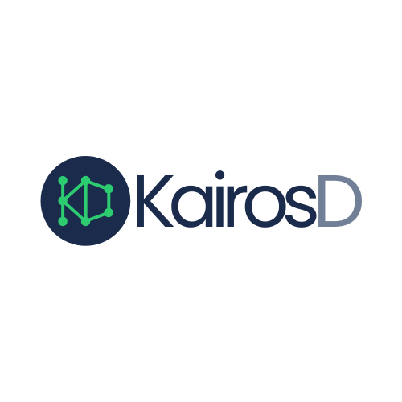
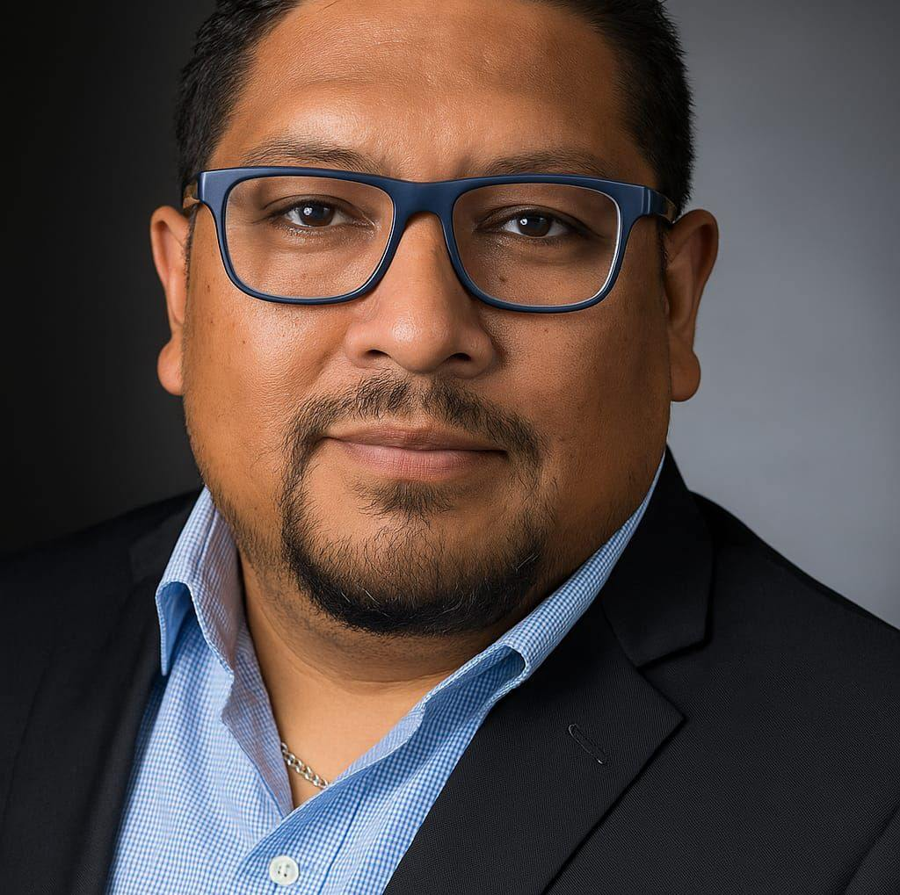

Ingeniería Aplicada al
Éxito Digital.
Fusionamos la precisión del sector industrial con la innovación del desarrollo web nativo para crear marcas de alto rendimiento.

Cuando tu negocio crece, todos crecemos.
Resolvemos la falta de estrategia en el marketing regional.
Diferenciación: Salimos del ruido para que tu marca destaque.
Ejecución: Menos planes en papel, más resultados constantes.
Nuestro objetivo es que cada peso rinda frutos: mejores empleos y marcas que perduren en Guanajuato y el Bajío.
Quién lidera la estrategia

Jose Luis Ramirez
Ingeniero en Robótica (UPGto)
Mi formación en el ecosistema digital comenzó hace más de una década. En 2013, transformé la presencia digital de Wellden de México, optimizando su SEO y renovando su identidad gráfica.
Años más tarde, en 2017, puse a prueba mis propias estrategias al lanzar un emprendimiento en el sector de la pailería. Ahí ejecuté el ciclo completo de una marca: desde el branding y la arquitectura web hasta la estrategia de ventas que impulsó el crecimiento real del negocio. Hoy, en KairosD, aplico esas lecciones de éxito para que otros negocios del Bajío no solo existan, sino que dominen su mercado.
Esa experiencia me permitió participar en la identidad y ecosistema digital de proyectos críticos como:
Especialidades Técnicas
Hablamos el idioma de la gran industria.
KairosD nace de la necesidad de profesionalizar la presencia digital en Guanajuato. No usamos plantillas de WordPress porque tu negocio no es una copia; es una estructura que requiere arquitectura limpia y código eficiente.
Nuestra metodología tiene sus raíces en la disciplina de plantas como BMW, Toyota y DEACERO, donde la tolerancia al error es cero. Esa misma rigurosidad la aplicamos a cada logo y cada línea de código que entregamos.
Años escalando marcas en el Bajío
Rigor Técnico
Implementamos soluciones nativas que cargan en menos de un segundo. Si no es rápido, no es ingeniería.
Identidad Vectorial
Creamos branding con precisión industrial, listo para ser aplicado desde una tarjeta de presentación hasta un espectacular.
Enfoque en Resultados
No solo entregamos estética; entregamos herramientas de prospección alineadas a tus objetivos comerciales.